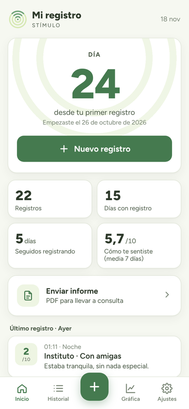
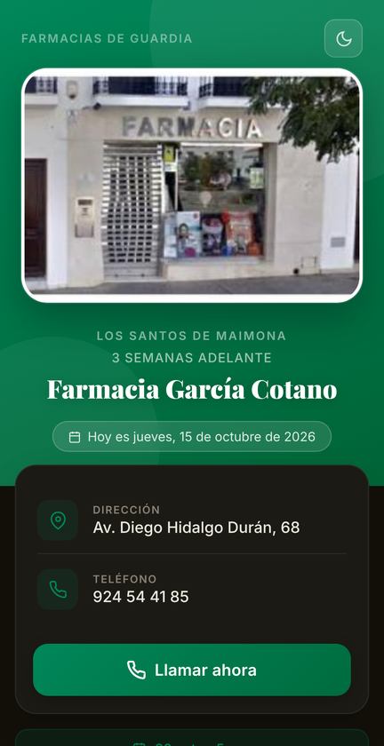

Apps hechas para usarlas de verdad
Apps sencillas y útiles para el día a día.
Ver las apps
Gratis y sin publicidad, para Android e iPhone


Las aplicaciones
Nacho
Desarrollando y dirigiendo desde 2011. Project Manager y experto en análisis y desarrollo de software.